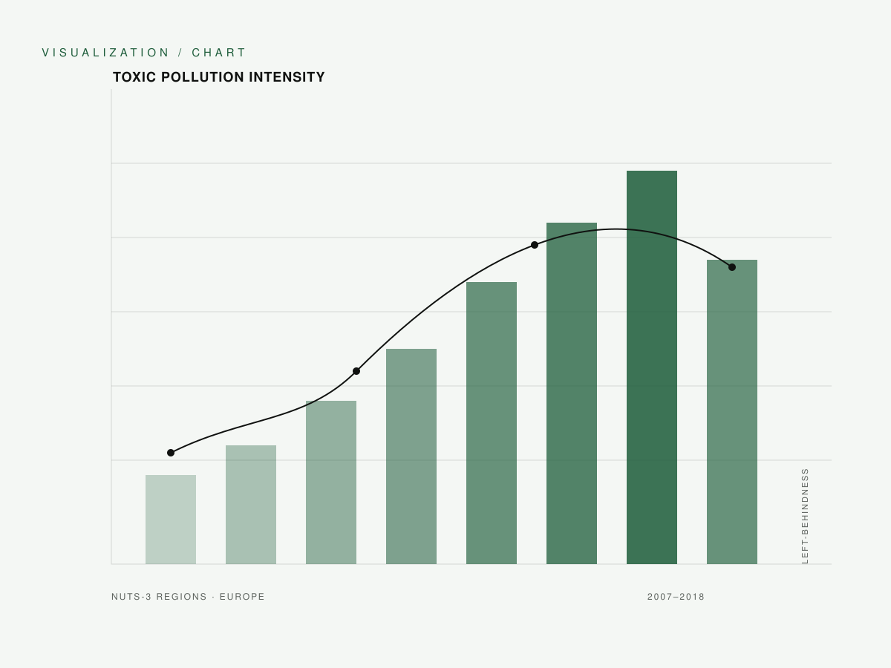
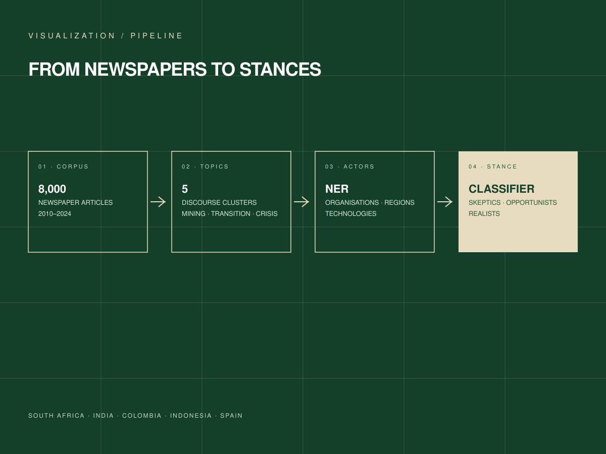

Map. Mapping AI data centre siting in environmental justice communities
A spatial co-location analysis of roughly 5,000 AI data centres against indicators of cumulative environmental burden in the United States.
07 Visualizations
Maps, charts, and pipelines that accompany my research. They are developed with collaborators and released alongside the associated papers; several are works in progress.
Environmental inequality is a spatial problem. Visualizations help make visible where industrial risks accumulate, which communities are exposed, and how the geography of the low-carbon transition overlaps with the geographies of fossil infrastructure and economic decline. The pieces below are exploratory rather than definitive: they are intended to open questions, not to close them.
A spatial co-location analysis of roughly 5,000 AI data centres against indicators of cumulative environmental burden in the United States.

Facility-level toxic pollution weighted by toxicity and combined with regional labour-market data across more than 1,200 NUTS-3 regions.

An integrated pipeline combining topic modelling, named entity recognition, sentiment analysis, and supervised stance classification.
Notes
Visualizations on this page are schematic previews of ongoing projects. Final figures, replication materials, and interactive versions will be linked here as papers are released. For collaborations involving maps or data visualization, please get in touch.